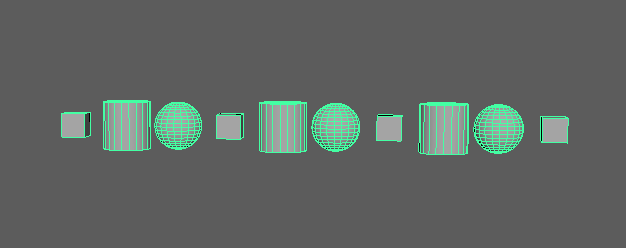
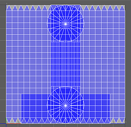
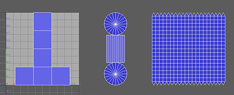
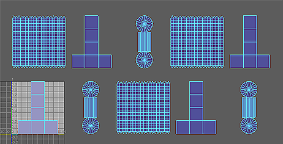

“颜色”(Color)节点用于针对当“几何体类型”(Geometry Type)设置为“网格”(Mesh)时创建的网格，在工作区中自定义 MASH 网络的 CPV 数据的显示方式。由于该节点使用 CPV 数据，因此必须首先启用重新投影节点的“逐顶点颜色”(Color per vertex)输出，然后显示 MASH_ReproMesh 的颜色属性数据（(Mesh Display > Toggle Display Colors Attribute)，才会在工作区中看到颜色。
颜色
-
颜色(Color)
- 确定 MASH 网络中对象的基础漫反射颜色。
-
UV 网格(UV Mesh)
-
连接以添加它。
-
颜色集名称(Color Set Name)
-
-
随机色调(Random Hue)
- 将随机值添加到“颜色”(Color)属性的色调。
-
饱和度随机(Saturation Random)
- 将随机值添加到“颜色”(Color)属性的饱和度。
-
值随机(Value Random)
- 将随机值添加到“颜色”(Color)属性的值。
-
随机种子(Random Seed)
- 调整由“色调随机”(Hue Random)、“饱和度随机”(Saturation Random)和“值随机”(Value Random)属性使用的随机化。
-
使用速度(Use Velocity)
- 使用 Waiter 提供的“速度”(Velocity)倍增。启用此选项后，对象的移动速度越快，看起来就更亮。
-
融合模式(Blend Mode)
- 指定如何将“颜色”(Color)应用于 MASH 网络中的对象。选项包括：
- 正常(Normal)：使用“颜色”(Color)值覆盖当前的 CPV 数据。
- 相加(Add)：将“颜色”(Color)值与当前的 CPV 数据相加。
- 相减(Subtract)：从当前的 CPV 数据中减去“颜色”(Color)值。
- 相乘(Multiply)：用“颜色”(Color)值乘以当前的 CPV 数据。
- 屏幕(Screen)：反转、相乘然后再反转“颜色”(Color)和当前的 CPV 值。
- 叠加(Overlay)：结合使用“屏幕”(Screen)与“相乘”(Multiply)模式。最终结果是扩大现有 CPV 灯光/黑暗的效果。
-
启用背景颜色(Enable Backgroud Color)
- 为不受“颜色”(Color)属性影响的任何对象设置默认颜色。与“衰减对象”(Falloff Object)结合使用时，该选项对为受影响区域外部的对象上色最有用。
UV 平铺设置
-
UV 模式(UV Mode)
- 确定 MASH 网络中每个网格的 UV 空间。例如，给定以下 MASH 网络

可用选项将如下所示：
-
通过(Pass Through)
- UV 放置在与其源对象相同的空间中，即使这意味着它们将在 1,1 UV 空间中重叠。

-
按 ID (By ID)
- 与每个具有唯一 ID 的对象对应的 UV 并列放置。与具有相同 ID 的对象对应的 UV 将重叠。

-
唯一(Unique)
- 与各个对象对应的 UV 并列放置。

-
限制平铺(Limit Tiles)
- 对此节点可以使用的 UV 平铺数量（由“平铺计数”(Tile Count)表示）启用硬性限制。
-
随机化 UV (Randomize UVs)
- 选择每个点的随机 UV 平铺。仅当“UV 模式”(UV Mode)设置为“唯一”(Unique)时才有效。
-
平铺计数(Tile Count)
- 确定启用“限制平铺”(Limit Tiles)时的最大 UV 平铺数量。
强度(Strength)
-
强度(Strength)
- 同时减弱对所有点的节点效果。
-
随机强度(Random Strength)
- 按随机顺序平滑地减弱所有点的节点效果。
-
阶跃强度(Step Strength)
- 每次禁用一个点的节点效果。
-
强度贴图(Strength Map)
- 确定输入文件（2D 纹理、动画纹理等）来控制该节点的效果的形状。
-
贴图投影轴(Map Projection Axis)
- 确定投影“强度贴图”(Strength Map)时所沿的轴。
-
贴图辅助对象(Map Helper)
- 显示用于在场景中交互放置“强度贴图”(Strength Map)的对象。可以在该字段上单击鼠标右键来创建新的辅助对象（平面）（如果不存在）。还可以使用鼠标中键将网格拖入此字段，或者单击鼠标右键连接选定网格。如果网格已连接，还可以单击鼠标右键来断开其连接或者将其显示在大纲视图中。
注： 为获得最佳结果，请将相同的纹理指定给“强度贴图”(Strength Map)和“贴图辅助对象”(Map Helper)（在创建新的辅助对象时将自动执行此操作）。